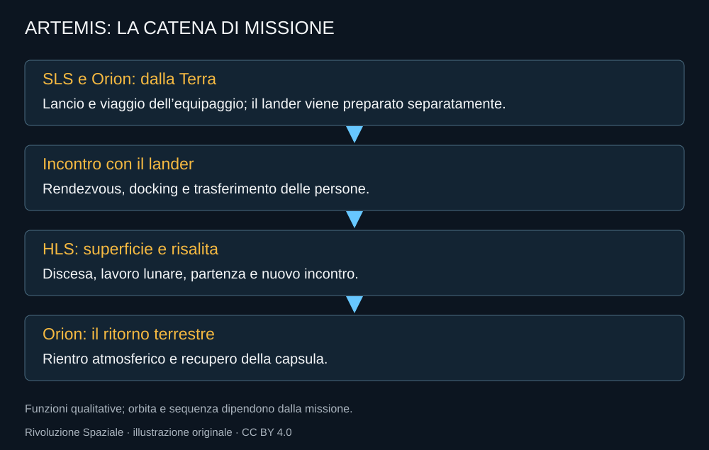

Artemis non porta un solo veicolo dalla rampa alla superficie lunare e poi a casa. Divide il lavoro. SLS lancia Orion; Orion sostiene il viaggio dell’equipaggio; il lander porta gli astronauti dalla zona d’incontro alla superficie e li riporta verso la capsula. Le risorse necessarie al lander possono richiedere una preparazione separata.
Separare i compiti può aiutare
Un veicolo progettato per rientrare nell’atmosfera terrestre ha bisogni diversi da uno che deve atterrare sulla Luna. Separare queste funzioni permette di non portare ovunque tutti gli apparati. Ma crea interfacce: agganci, comunicazioni, trasferimenti delle persone, responsabilità e condizioni di missione compatibili.

La missione è pronta quando è pronta la catena
Una capsula completata non rende disponibile un lander. Una nave grande sulla rampa non prova che possa conservare propellenti per il tempo necessario. Una tuta provata a terra non certifica automaticamente il lavoro sulla superficie. Il programma deve far convergere disponibilità che hanno tempi e rischi diversi.
Questo spiega perché il calendario non si possa ricavare dal componente più vistoso. Il ritmo della fabbrica di un fornitore può essere impressionante e non risolvere un apparato fornito da un altro. La capacità del programma è determinata dai passaggi indispensabili che restano aperti.
La prova vicina alla Terra
La nuova Artemis III viene costruita attorno a questa necessità. Rendezvous e docking fra Orion e uno o entrambi i sistemi commerciali di allunaggio devono essere verificati in orbita terrestre. La combinazione precisa dipenderà dalla disponibilità e dai requisiti; il libro non assegna già un vincitore alla prova.
Un ambiente più vicino offre possibilità di gestione diverse rispetto alla Luna. Non rende banale il test: consente di concentrare una missione sulla compatibilità delle interfacce e sulle procedure, senza chiedere contemporaneamente la discesa su un territorio lontano.
Perché una mappa delle dipendenze è utile
Quando una data cambia, la domanda utile è quale funzione abbia richiesto più tempo. Un ritardo nel supporto vitale ha una conseguenza diversa da un ritardo della torre. Un’anomalia al rientro riguarda la sicurezza del ritorno, anche se il lancio è stato perfetto.
Lo schema del programma serve a leggere questi legami. Non assegna colpe per semplice prossimità: il fornitore più famoso non è necessariamente responsabile di ogni rinvio. E non confonde i servizi robotici CLPS con i sistemi HLS destinati alle persone.
Una presenza richiede altre catene
Il primo allunaggio umano non deve contenere già una base completa. Ma una permanenza continuativa richiederà energia, logistica, manutenzione e collegamenti. Il passaggio dall’esplorazione alla presenza moltiplica le missioni preparatorie e la necessità di standard.
È questa la filosofia del libro: guardare la missione come un insieme di lavori precisi. Solo così una fotografia del razzo, una tuta o una carta del polo diventano parti della stessa storia.
Fonti pubbliche e tracce
- NASA, come il test Artemis III prepara gli allunaggi, 15 luglio 2026. Prova di rendezvous e docking, non allunaggio Artemis III.
- NASA, selezione SpaceX HLS, 16 aprile 2021. Contratto iniziale e requisiti; architettura storica da non confondere con calendario 2026.
- NASA, nuova architettura Artemis, febbraio 2026. Artemis III in orbita terrestre nel 2027; obiettivo Artemis IV nel 2028.